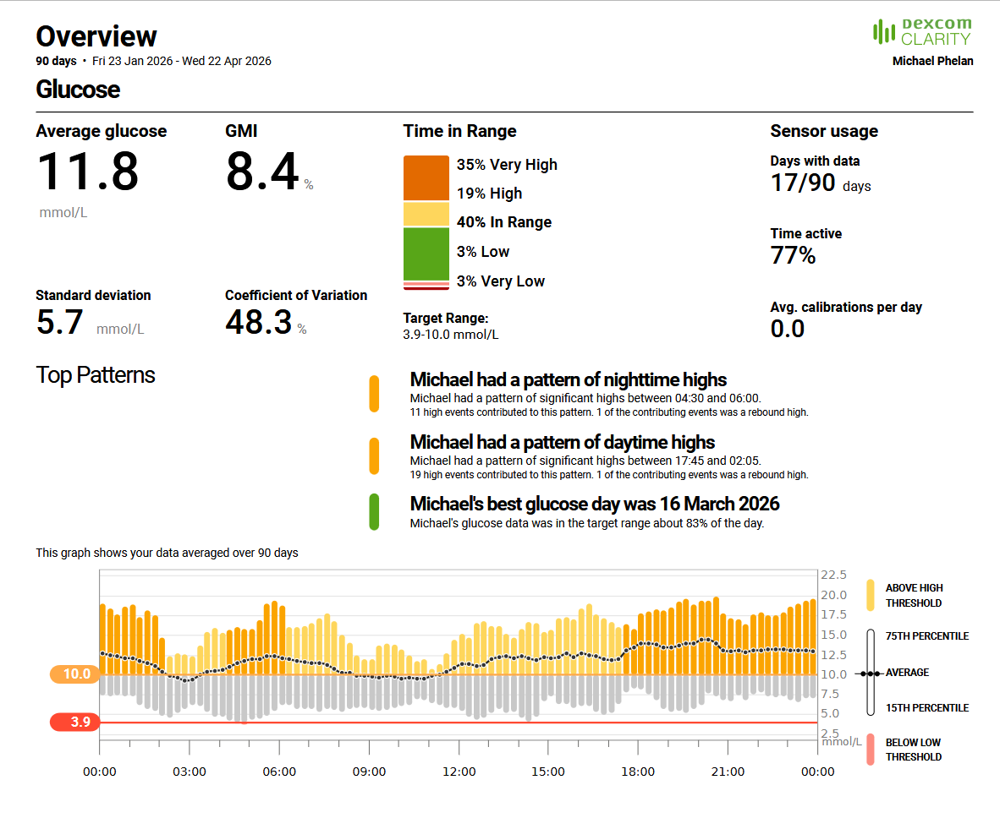
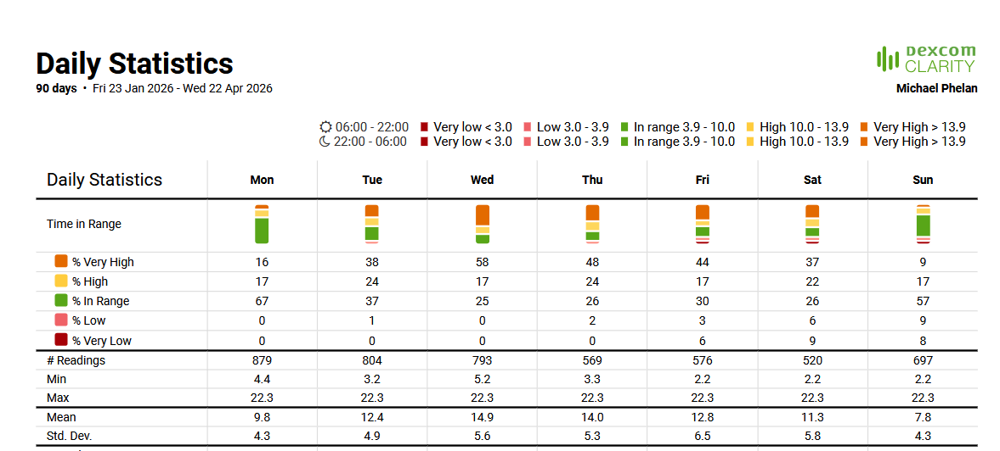
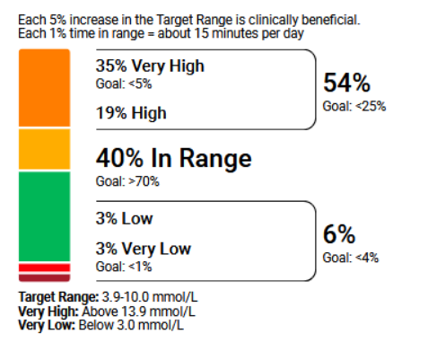
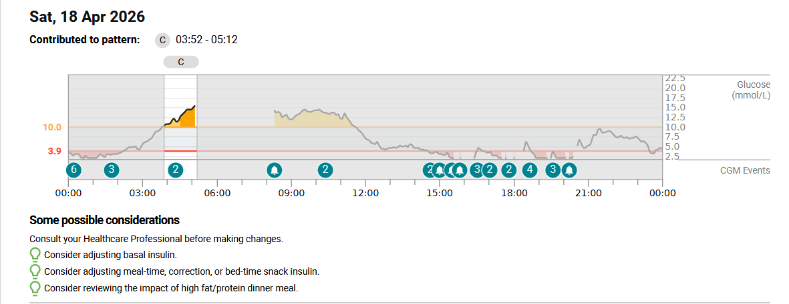

The concept of the “quantified self” refers to the use of digital technologies to collect and analyse personal data in order to better understand one’s behavior, health, and daily life. This project explores my own quantified self through the analysis of continuous glucose monitoring data from a Dexcom G7 device. Initially, the aim was to produce a comprehensive, data driven account of my health over a one month period. However, the process revealed significant limitations in both data collection and reliability. In particular, technical issues with the Dexcom G7 resulted in incomplete datasets, raising questions about how accurately such technologies can represent lived experience.Despite these challenges, the data still reveals meaningful patterns in my health, particularly in relation to consistently elevated blood glucose levels and recurring fluctuations throughout the day.
Despite these challenges, the data still reveals meaningful patterns in my health, particularly in relation to consistently elevated blood glucose levels and recurring fluctuations throughout the day.
The primary dataset was continuous glucose monitoring data collected using a Dexcom G7 device, which records blood glucose levels at regular intervals throughout the day. This was intended to provide detailed insight into fluctuations in my blood sugar and how they relate to daily behaviours and routines which helps me understand and control my type 1 Diabetes better. However, as the project progressed, it became clear that data collection was inconsistent due to technical issues with the device, resulting in gaps within the dataset.
The Dexcom G7 data provides the most detailed insight into my physical health, revealing clear patterns of consistently elevated blood glucose levels. Over the recorded period, my average glucose level was 11.8 mmol/L, exceeding the recommended target range of 3.9–10 mmol/L. Time in range analysis further highlights this issue, with only 40% of readings falling within the target range, while a majority of 54% were classified as high or very high. These figures indicate that my glucose levels were not only elevated but frequently outside of healthy boundaries, suggesting a broader pattern of poor blood sugar control.

In addition to overall levels, the data also reveals other distinct patterns. Glucose levels were particularly elevated during the evening and nighttime hours, with spikes occurring between approximately 17:45 and 02:05, as well as in the early morning between 04:30 and 06:00. These trends suggest a possible relationship between my daily routines and glucose fluctuations, particularly in relation to late eating habits, reduced physical activity in the evening, and irregular sleep patterns. While the Dexcom data does not directly record contextual factors such as diet or stress, these recurring patterns imply that behavioural choices play a significant role in shaping my physiological state.
Daily statistics further show that my glucose levels were not consistent across an average week over this last month. While some days included more time within the target range, others were largely dominated by high or very high readings. This variation suggests that my glucose control was not only elevated overall, but also unstable from day to day. Rather than showing a clear pattern of control, the data reflects fluctuations that may be influenced by changes in routine, behaviour, or inconsistencies in the data itself.

The time in range data also highlights how far my glucose control is from recommended targets. While clinical guidelines suggest that glucose levels should be within range for around 70% of the time, my data shows only 40% in range. This places me approximately 30% below the recommended level, indicating that my glucose control is not only elevated but significantly outside of what would be considered stable or well managed.

While the Dexcom G7 data provides valuable insight into my glucose levels, the process of collecting this data revealed significant limitations in the reliability of self tracking technologies. Over the intended one month period, only 17 days of usable data were recorded due to repeated technical issues with the device, including sensor failures, inconsistent data syncing, difficulties connecting, and occasional inaccurate readings. These disruptions not only reduced the volume of available data but also created gaps that make it difficult to form a continuous and fully representative picture of my health.
In addition to these technical faults, the wider system through which the device operates also contributed to data inconsistency. I use a Tandem insulin pump, which connects to the Dexcom G7 sensor as well as to my mobile phone. However, due to the relative novelty of this system, I was informed by a Tandem representative that many healthcare professionals are not yet fully familiar with how it functions. I was also advised that connecting both the pump and my phone simultaneously could interfere with the system, and that more stable performance could be achieved by connecting only the pump. While this may improve functionality, it prevents glucose data from being transmitted to my phone, which is the primary way I review and share data with healthcare providers. This makes it difficult to both maintain device reliability and ensure consistent data collection, ultimately contributing to incomplete datasets.
Through continued use of the Dexcom G7 application, I also found that its design significantly influenced how I interacted with the data it produced. The app generates frequent and extremely loud alerts when glucose levels move outside of set thresholds. Given that my glucose levels often exceeded these limits, these alerts became a constant feature of everyday situations such as lectures, work, and public settings. As a result, I began to silence notifications or close the application entirely to avoid repeated disruption.
This response to the app’s design had unintended consequences. By disabling or avoiding alerts, it became more difficult to stay aware of changes in my glucose levels as they happened, and the overall continuity of the data was affected This shows that the way the application is designed influenced how I used the device in practice. By silencing alerts and avoiding the app, I unintentionally reduced both my awareness of changes in my glucose levels and the consistency of the data being recorded.
This experience contrasts with my previous use of the Dexcom G6 system, which I found to be more reliable when it came to consistently collecting data. Moving to the G7 has shown how different technologies can create different versions of the “quantified self,” not because my body has changed, but because of differences in how the devices perform and how easy they are to use. As a result, the data produced is not completely objective, but is influenced by the technology behind it.
A further example of these limitations emerged during a work shift on the 18th of April, where my experience directly conflicted with the data provided by the Dexcom G7.

At approximately 12:30, I began to feel extremely unwell, with symptoms I associate with low blood sugar, including dizziness, weakness, and difficulty concentrating. However, the application displayed a reading within the normal range. Later in the day, the device stopped providing readings for a period of time, and when it resumed, it reported a sudden drop in glucose levels that did not align with how I felt physically. Shortly afterwards, the device disconnected entirely.
As a result of these conflicting readings, I found myself making incorrect adjustments throughout the day, treating perceived low blood sugar with glucose and responding to apparent highs with insulin. This created a cycle in which my blood sugar fluctuated repeatedly between low and high levels, demonstrating how unreliable data can directly influence decision making and physical outcomes. Through this experience, I found that I could not rely solely on the data presented by the device and instead had to interpret my condition through physical symptoms.
While the graph presents a continuous and seemingly stable record of glucose levels throughout the day, Some of the low readings seen on the graph show values that conflicted with my physical experience and this graph also does not capture the moments where the device failed to provide readings at all, For example, during the afternoon period, the device temporarily stopped providing data and later reported a sharp drop in glucose levels that did not align with how I felt at the time.
This highlights an important limitation of data visualisation within the quantified self. Although the graph appears coherent and medically informative, it masks underlying inconsistencies, gaps, and inaccuracies in the data collection process. As a result, the graph makes the data appear more consistent and reliable than it actually was. In reality, my experience of the day included gaps, disconnections, and readings that did not match how I felt. This shows that the data cannot be taken at face value and needs to be interpreted alongside real world experience.
In conclusion, this project demonstrates both the potential and the limitations of the quantified self. While the Dexcom G7 data revealed clear patterns in my glucose levels, it also exposed significant issues in data reliability, device functionality, and interpretation. Through tracking my own data, it became clear that it was not a completely objective representation of my health, but something shaped by both the performance of the device and how I interacted with it.
The inconsistencies, gaps, and inaccuracies I encountered throughout the project showed that the quantified self is not complete. At several points, the device readings did not match how I actually felt, which made it clear that I could not rely on the data alone. Instead, I had to use my own judgement and physical experience to understand what was happening. Overall, this project shows that while self tracking technologies can provide useful insights, they do not fully capture the reality of everyday life and need to be interpreted carefully.